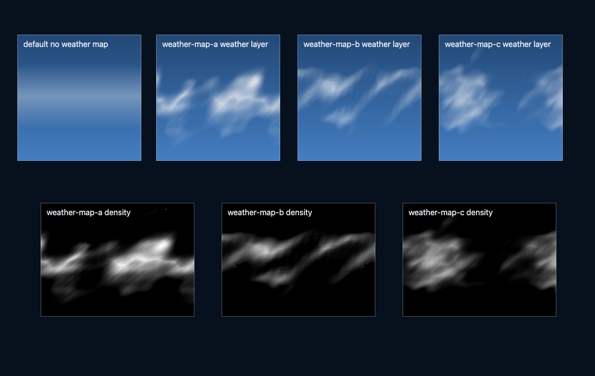
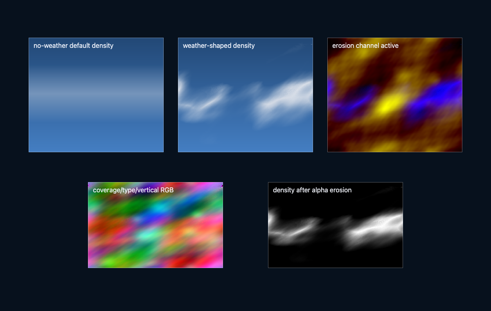
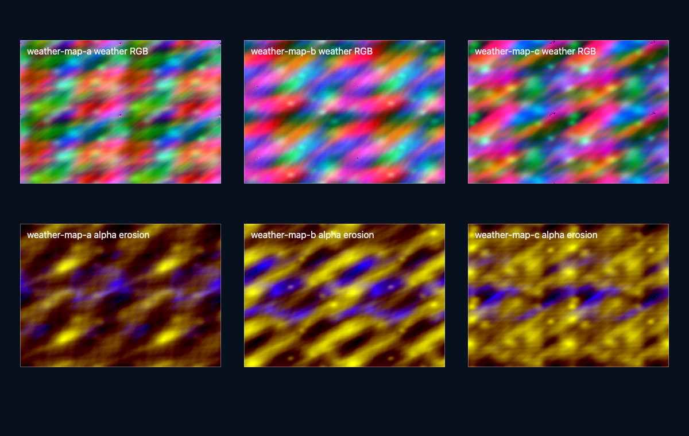
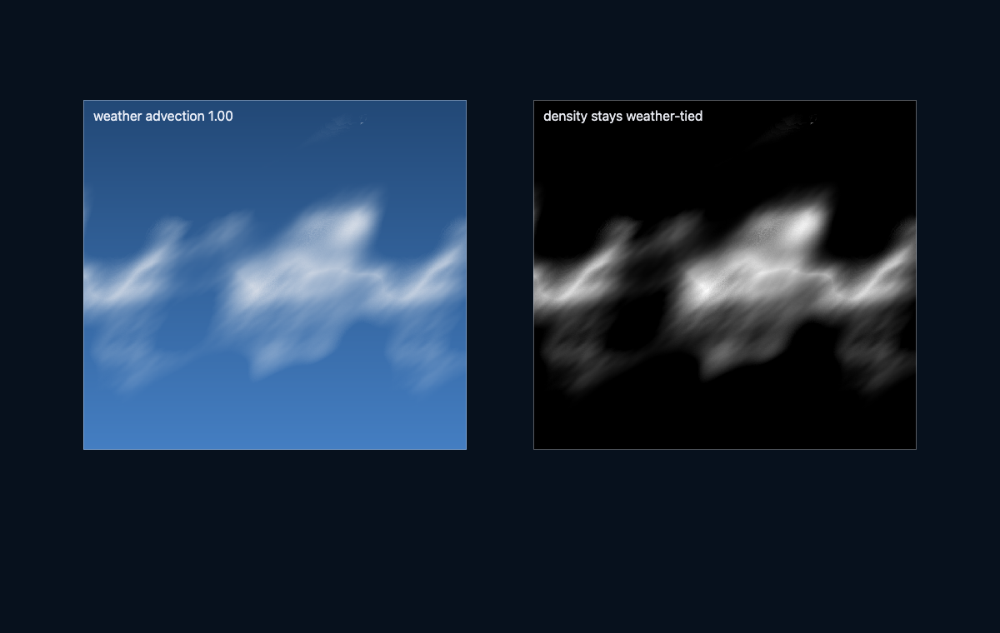

Primary implementation surface
These routes are generated from canonical source. Their exact status remains separate from implementation availability.

Generated weather-map asset previewImplement workload-selected volumetric cloud systems in Three.js r185 with WebGPURenderer, TSL, NodeMaterial, node RenderPipeline passes, compute/storage textures, temporal reprojection, cloud shadows, and error-bounded quality tiers.
These routes are generated from canonical source. Their exact status remains separate from implementation availability.
This skill contributes to the following cross-skill owner graphs.
Clouds are a participating medium raymarched through a weather-shaped density field. Along a primary ray, transmittance obeys the exponential extinction integral:
$$T(s) = \exp\!\left(-\int_0^s \sigma_t\big(\mathbf x(u)\big)\,du\right)$$Single scattering accumulates in-scattered sunlight attenuated toward the sun at each step, with the Henyey–Greenstein phase function controlling forward silver-lining:
$$L = \int_0^{s_{max}} T(s)\,\sigma_s\,p(\cos\theta)\,L_{sun}(s)\,ds, \qquad p(\cos\theta) = \frac{1-g^2}{4\pi\,(1+g^2-2g\cos\theta)^{3/2}}$$Temporal reconstruction spreads the march over frames: a sub-pixel jitter sequence plus history reprojection $H_t = \alpha\,C_t + (1-\alpha)\,H_{t-1}(\mathbf{uv} - \Delta_{\mathbf{uv}})$ — the history fetch must be motion-warped, or the amortization degenerates to screen-space smearing.
Every image identifies what it proves. Page screenshots demonstrate the published presentation only; generated inputs demonstrate asset channels only; canonical acceptance still requires render-target readback and a schema-v2 bundle.
4 published images
generated asset preview
generated asset preview
generated asset previewThe complete SKILL.md as loaded by agents — verbatim, rendered.
Cloud throughput is won by architecture before code details: march fewer pixels,
march only occupied volume, amortize with temporal reprojection, and carry enough
depth/velocity data to reject bad history. The taught path is pinned Three.js r185
with WebGPURenderer from three/webgpu, TSL from three/tsl, node materials,
compute/storage resources, and a node RenderPipeline.
The density field is an authored meteorological appearance model unless it is coupled to validated atmospheric data. Beer-Lambert attenuation is physical for the declared coefficients; dual-lobe phase fits, octave multiple scattering, powder terms, procedural coverage, and compact shadow tails are approximations. State this boundary in every implementation.
Read references/weather-volume-and-reconstruction.md before implementing or auditing the cloud system.
For coupled weather or lighting, first read the router's
physics-domain and interaction contract.
Consume its versioned PhysicsContext, EnvironmentForcingSnapshot, and
LightingTransportSnapshot; do not invent a cloud-only world scale, wind
clock, solar basis, or attenuation convention.
The project/environment coordinator is the sole owner and publisher of
EnvironmentForcingSnapshot. Clouds consume that immutable boundary and may
publish a distinct PrecipitationEmissionSnapshot; they never republish
forcing under a cloud-owned revision or clock.
EnvironmentForcingSnapshot.sampleInstant: PhysicsInstant, with its declared
frame, altitude/support domain, cadence, interpolation policy,
requested/actual oriented spatial footprint, spatial/temporal filter or band,
and per-channel error. Every forcing channel has
SampledChannel.actualPhysicsTime: PhysicsInstant. Cloud-relative evolution
is a separately named velocity relative to the air. It is not water current
or vegetation deformation.appearance-only or causal-precipitation explicitly. An
appearance-only density field may expose an artistic precipitation bias but
exposes no physical emission channel. A causal producer publishes dimensioned
phase-fraction-resolved liquid/ice PrecipitationEmissionSnapshot with
emissionInterval: PhysicsTimeInterval and canonical oriented mass-area flux;
every emission channel has
SampledChannel.actualPhysicsTime: PhysicsTimeInterval equal to that
interval. A volume-source cloud model projects through its support/Jacobian
before publication. Include
fall-delay or transport model, cadence, uncertainty/error, typed
ConservationGroup.boundaryFluxes, a closing ConservationGroup, and an
ErrorPropagationLedger for the emitted state version. Delivery accounting
is not cloud state: the downstream rain-owned SurfaceExchange.batchLedger
owns its immutable InteractionBatchLedger. Any derived SurfaceExchange
and InteractionRecord use contained
applicationInterval: PhysicsTimeInterval.LightingTransportSnapshot.sampleInstant: PhysicsInstant;
every lighting channel has
SampledChannel.actualPhysicsTime: PhysicsInstant. Apply
atmospheric attenuation exactly once using its versioned
attenuationFactorIds, not a boolean.
Cloud self-shadowing contributes a separate cloud optical-depth/transmittance
factor; it never bakes atmospheric attenuation into that factor.PhysicsPresentationCandidate.presentedStatePairs, with the
candidate's requestedPresentationInstant: PhysicsInstant,
resourceLeases, and eventSequenceRanges. The candidate contains no camera,
render origin, globalToRender, view/projection matrix, shadow/cache epoch,
or view-specific current/history/reconstruction state. Every pair carries
independent previousPresented.provenance and
currentPresented.provenance records of type
PresentationSampleProvenance; never collapse them into one shared
provenance record. Each arm has its own presentedInstant: PhysicsInstant.
The camera owner publishes a per-target/view CameraViewPublication with
previousRenderSampleInstant: PhysicsInstant,
currentRenderSampleInstant: PhysicsInstant, source-qualified
globalToRenderPrevious, globalToRenderCurrent, and view/projection
matrices. Visibility, acceleration, cloud-shadow view products, temporal
caches, reactive/reset
plans, and their lease refs belong to the subsequent per-view
ViewPreparationPublication fields visibilityPublicationRefs,
accelerationPublicationRefs, shadowViewPublicationRefs,
cachePublicationRefs, reactiveEpochs, reactivePublications,
resetDependencies, full resourceLeases for newly created
camera-dependent generations, and resourceLeaseRefs. The sealed
PhysicsPresentationSnapshot
contains only snapshotId, candidateId, cameraPublicationId,
viewPreparationId, presentationTargetId, viewId,
presentedStatePairRefs, resourceLeaseRefs, eventSequenceRanges, and
closureManifest, and sealVersion; it copies no pairs or transforms. The
candidate exposes separate PresentedStatePair bindings for committed cloud
density and, in causal mode, the committed precipitation-emission generation
whenever either is presented. closureManifest.exactRequiredLeaseIds and
exactEventRangeIds close those bindings and dependencies exactly. Hold,
analytic, or no-interpolation policy is explicit in each previous/current
provenance record.Route every physics-authoritative change of cloud equations, state
discretization/support, cadence, provider filter, emission representation, or
stable identity through the shared QualityTransition. A beauty-march scale,
shadow resolution, or reconstruction-only change may remain local only when it
does not change any physical state, provider descriptor, emission integral,
filter, ID, or cadence.
Keep mobile tiers analytic and sparse: a low-rate authored weather map may sample a coarse wind provider and causal precipitation may use a conservative column flux/fall delay. Do not allocate cloud microphysics or dense transport state unless its observable and error contract requires it.
Phase 1 WebGPU/TSL validation scaffold:
examples/webgpu-weather-volume-clouds/. It includes validateCloudConfig(),
asset-manifest checks, and shadow/temporal/composite ownership descriptors. Its
validator checks contract wiring, not radiometric, spatial, temporal, or visual
correctness; use this skill/reference as the implementation specification and
the numerical/image gates below before promoting a renderer. Still run
node examples/webgpu-weather-volume-clouds/validation.js after scaffold edits.
Legacy WebGL implementation (quarantined, do not extend or use as a pattern):
examples/deprecated-weather-volume-clouds/.
WebGPURenderer, call await renderer.init(), and route
compute/storage tiers through a capability gate:await renderer.init();
if (renderer.backend.isWebGPUBackend) {
// Canonical compute/storage volumetric path.
} else {
throw new Error("WebGPU backend unavailable for the canonical path.");
}
RenderPipeline, pass(), mrt(), PassNode.setResolutionScale(),
renderOutput(), and outputColorTransform ownership for the host image
chain. Keep one tone-map owner and one output transform owner.Fn().compute(count) dispatches through
renderer.compute() or renderer.computeAsync(). Write current cloud
radiance/transmittance, representative depth, velocity, history, and compact
shadow data into StorageTexture/Storage3DTexture resources with
textureStore()/storageTexture().
After initialization use renderer.compute() for submission; r185
computeAsync() is not a GPU-completion fence.RenderPipeline; combine with scene color before
the single output transform.Do not add a second renderer branch to this flagship specification. A missing WebGPU backend is a reported capability failure.
Verified against local Three.js REVISION === "185":
WebGPURenderer, RenderPipeline, StorageTexture, and Storage3DTexture are
exports of three/webgpu; Fn, pass, mrt, renderOutput,
storageTexture, storageTexture3D, and textureStore are exports of
three/tsl. TRAANode is the default export and traa the named factory from
three/addons/tsl/display/TRAANode.js. These symbols are revision-sensitive;
smoke-test imports after upgrades. Explicitly configure every storage texture's
format/type/filter/mipmap policy; r185 StorageTexture constructor defaults do
not imply an HDR cloud target.
PassNode.setResolutionScale()
scales its entire pass; it does not selectively downsample one material.TRAANode supplies host temporal AA, not cloud-specific upscaling;
cloud reprojection still owns cloud depth, motion, confidence, and topology
rejection.Use scene length in meters or declare an exact conversion. With dimensionless
density shape rho, base coefficients beta_s and beta_a in m^-1:
sigma_s = rho * beta_s
sigma_a = rho * beta_a
sigma_t = sigma_s + sigma_a
tau = integral(sigma_t ds) // dimensionless
dL/ds = -sigma_t L + j // j: radiance per meter
L_acc += T_acc * (j / sigma_t) * (1 - exp(-sigma_t ds))
T_acc *= exp(-sigma_t ds)
Use the j * ds limit as sigma_t -> 0. A direct-light single-scattering
source is either sigma_s * T_sun * integral_sunDisk(p * L_sun dOmega) for
finite-disk radiance or sigma_s * p * E_sun * T_sun under a declared
collimated-irradiance convention. Never substitute radiance for irradiance
without the solid-angle integral. Omitting sigma_s or dividing an already-
normalized source twice breaks units. Normalize
phase functions so 2*pi*integral_-1^1 p(mu)dmu = 1; dual-lobe weights must be
nonnegative and sum to one.
| Evidence | Select | Gate |
|---|---|---|
| Small projected bounded volume, low temporal reuse | Full-resolution scissored/bounded march, no history | Full-res covered pixels cost less than reduced reconstruction/history and pass error gates |
| High occupied-sample fraction | Bounded adaptive march; no 3D hierarchy | Hierarchy lookup/divergence costs more than skipped field reads |
| Sparse, slowly evolving density | Conservative max-density macrocell hierarchy plus DDA | Skipped optical-depth/source upper bound is below the radiance error budget |
| Empty bands only vary by altitude | CPU-merged occupied intervals/complementary gaps | Debug view proves no occupied band is skipped |
| High temporal coherence, unimodal depth | Full low-resolution grid each frame, jitter, one representative depth/motion | Depth spread and rejection rate stay below gates |
| High coherence, strict dispatch budget | Explicit sparse/checkerboard update | Missing-sample reconstruction is defined separately from low-resolution jitter |
| Multi-layer or broad depth contribution | Depth moments, front depth, or separate layer histories | Single-depth reprojection exceeds disocclusion error gate |
| Low coherence, topology change, or camera cut | Current sample dominates; invalidate history | Stale-history confidence is zero |
| Mobile bandwidth limit | Quarter-linear targets, compact formats, fewer live histories, dynamic scale | Measured bytes/frame and GPU timestamps fit device/thermal budget |
| Authored key | Linear scale | Primary cap | Light cap | Shadow product | Temporal phase |
|---|---|---|---|---|---|
ultra |
1/2 | 160 | 8 | 3x 768-1024 | 4 frames |
high |
1/2 | 96 | 6 | 3x 512 | 4 frames |
default |
1/4 | 64 | 4 | 2x 384 | 16 frames |
reduced |
1/4 | 32 | 2 | 1-2x 128-256, amortized | 16 frames |
These are workload trial points, not hardware routes or time promises. A number is
Derived when it follows from format/resolution, Gated when computed from
an error limit, Measured only with hardware/revision/viewport/percentile and
thermal state, and otherwise Authored. Keep storage memory explicit:
quarter-linear 1920x1080 RGBA16F is
480 * 270 * 8 = 1,036,800 B = 0.989 MiB; half-linear is
960 * 540 * 8 = 4,147,200 B = 3.955 MiB (Derived). A 512x512 RGBA16F
cascade is 2 MiB (Derived), but a direct-sun optical-depth cascade should
normally be one explicitly formatted channel rather than RGBA16F.
Meter depth cannot be stored directly in binary16 beyond 65,504 m. For a 200 km interval, store interval-normalized/log depth in R16F and decode with the same ray interval, or use R32F; this range constraint is Derived. Record bytes read/written per dispatch, not only allocation size, because mobile cloud passes are commonly bandwidth-limited.
Report whole-frame p50/p95 and paired marginal p50/p95 from the same fixture with the cloud system alternated on/off. Do not subtract unrelated percentile runs, sum pass percentiles, or select a tuple from a device label. Select from measured occupancy, quality gates, bytes/frame, paired marginal cost, and thermal steady state.
beta_s, beta_a, and phase
convention;SRGBColorSpace; HDR/generated
radiance remains in its declared linear working space. Weather, noise, masks,
depth, velocity, LUTs, and shadow optical-depth data use
NoColorSpace/linear sampling.HalfFloatType until the
pipeline tone maps.RenderPipeline owns output conversion with outputColorTransform or an
explicit renderOutput() node. When renderOutput() is explicit, set
renderPipeline.outputColorTransform = false; after switching diagnostic
outputNode, set renderPipeline.needsUpdate = true.Use $threejs-choose-skills for preflight when the task spans several rendering
systems. Use $threejs-sky-atmosphere-and-haze for molecular/aerosol
scattering without weather density, $threejs-image-pipeline for whole-frame
HDR/post ownership, $threejs-exposure-color-grading for tone mapping and LUT
policy, and $threejs-scalable-real-time-shadows when terrain/scene shadows need CSM or
tiled shadow integration. This skill owns weather-shaped cloud volumes,
temporal reconstruction, optional typed precipitation emission, cloud lighting,
and cloud-only optical-depth shadows. Atmosphere owns the shared lighting
transport snapshot; rain owns precipitation transport to receivers.
Preserved concept proxies and generated-asset previews. They are excluded from primary completion counts and link to the canonical lab through the schema-v2 registry.